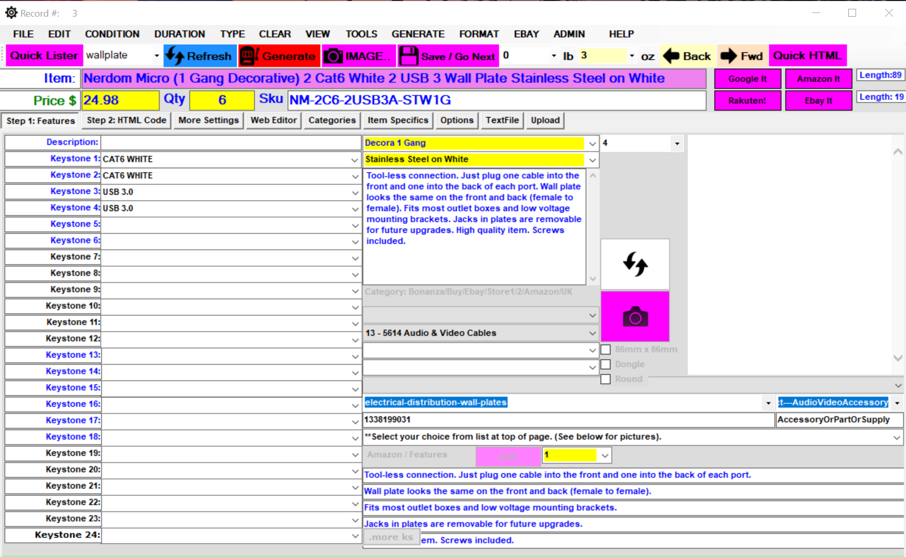

SOFTWARE PORTFOLIO
Michelle NesbittMy Website
-
Open to new projects.
Currently open to new projects.
Looking for a coder with many years coding experience? Contact me today.
-
Micro Plate 6
Custom Wall Plate picture generator software
A program that takes a bunch of images and puts them together into one audio video wall plate image. It then sends the image up to FTP upload. It can also read custom file to automatically create the images and save them based on the data provided in the text file. The images for the products were all photographed by me and modified in Photoshop.

-
Micro Lister 7
Custom e-commerce channel data feed generator software
The purpose of the software is to create data feeds automatically in which you use those data feeds to list your products on channels such as eBay, Amazon, Newegg, Shopify, BigCommerce, Rakuten, Amazon U.K., Yahoo (now Aabaco), Bonanza, Auctiva, and Fyndiq. Several spin off versions of this software were created. The latest version features conversion whereas one data feed from one channel can be converted to another channel's data feed. For example, eBay to Amazon etc. It then sends the images up to FTP upload and saves the listings/records to a tab delimited text file. It can also read custom file to automatically create the images and save them based on the data provided in the text file.
